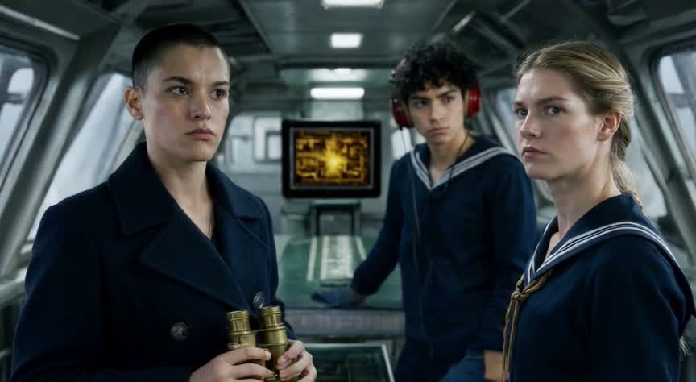


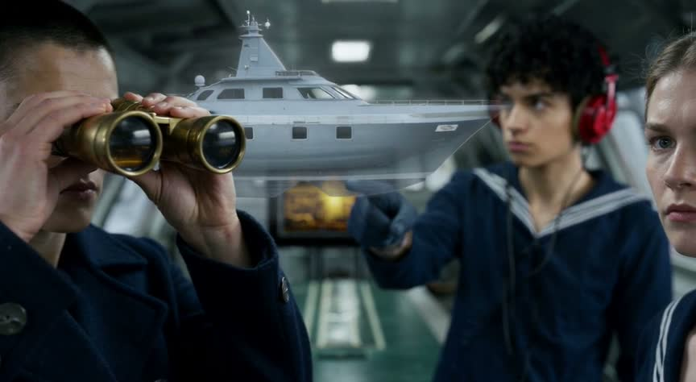
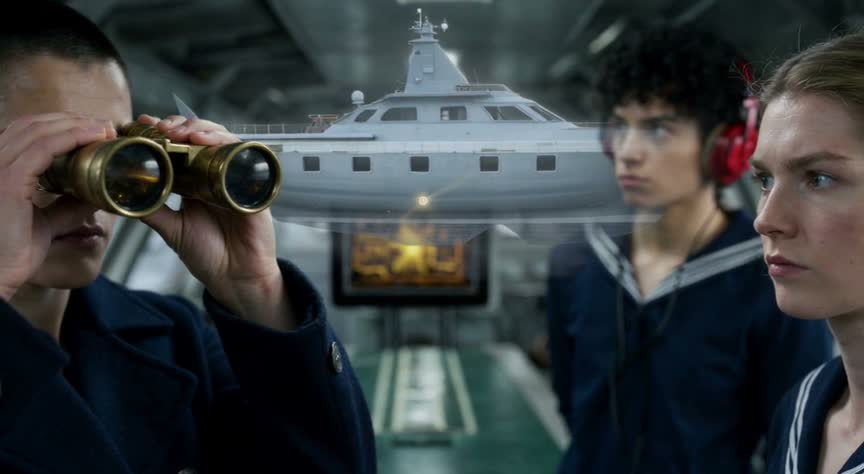
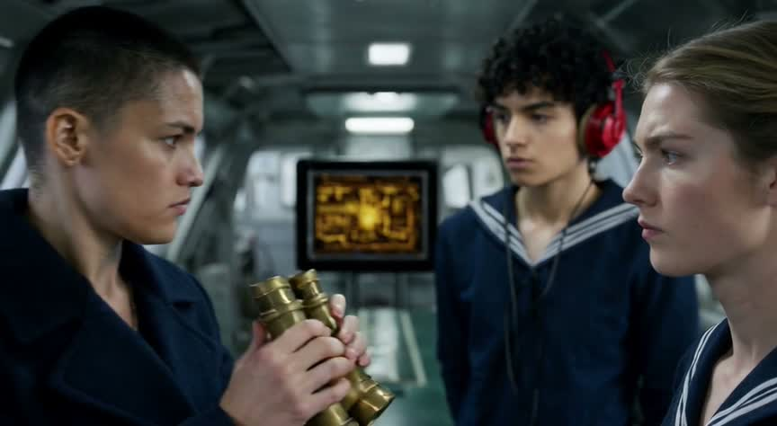
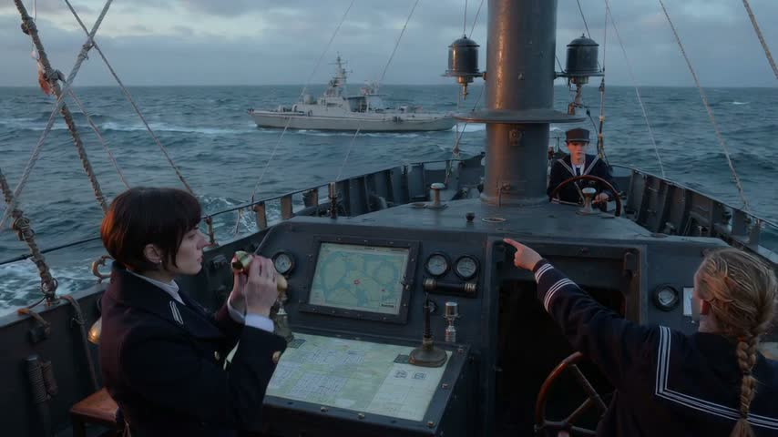


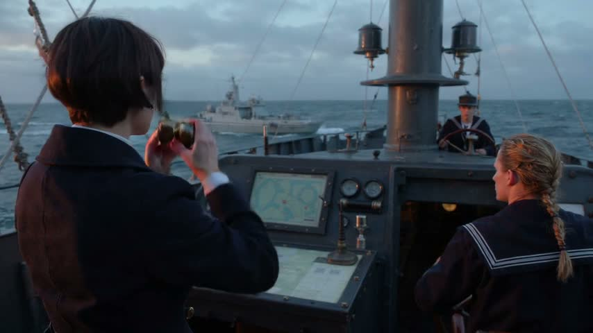
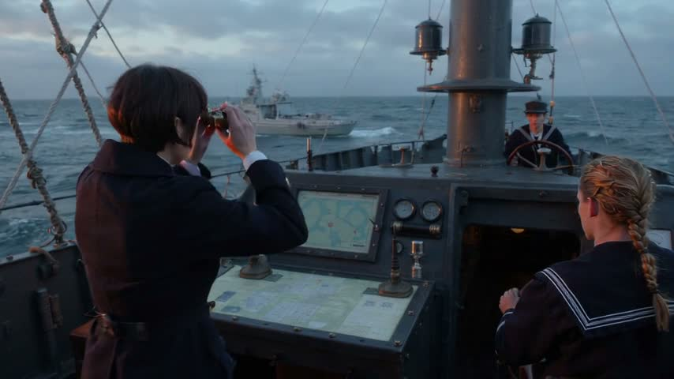
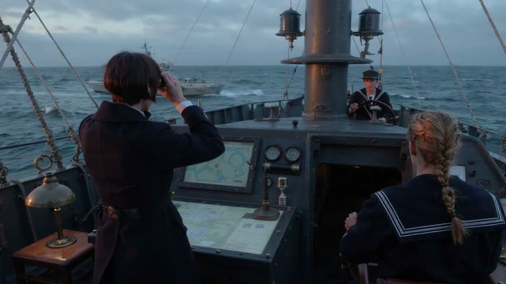
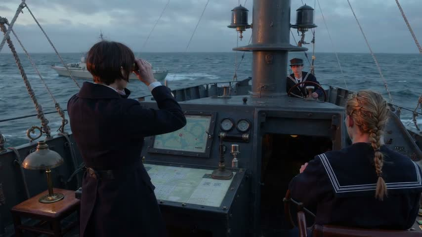
2026-11-02T20:28:33.314Z · ltx-2.5, no references, one prose prompt from a story and the guide · 720 credits · 6 LLM calls (gpt-6.1-sol) · docs: V3/docs/02-case-1-text-only.md
Brief. Contact: on the bridge of the Resolute, the lookout spots an enemy cruiser and points it out, Captain Vale confirms through her binoculars, the tactical screen tracks it, and Vale gives the command to fire. (Sequence 1 of 3 of 'Resolute: Contact, Salvo, Confirmation'.)
| V3 | MCP | |
|---|---|---|
| the reference | supplied by hand on the command line (V3/runs/v3-ship-1/refs/bridge_crew.png): a frame of clip 1 picked by a person; the state manager that would pick it is not built yet. A VLM then described it (people, objects, place, light) and those words became the fixed descriptors. | not run |
| the still (seed / first frame) | none (text only) | no still: it went straight to video |
| the video call | chosen in code: image-to-video on ltx-2.5 480p, 15 s, audio on, start frame = reference.png. ltx-2.5 is fixed for the free tier in V3; the story decided audio. | — |
| credits · time | 720 · 102 s of generation | — |
| V3 case 1 score | 64 / 100 · The consistent crew and convincing bridge largely match the visual brief, but the action order is wrong, the enemy appears as a translucent yacht-like overlay rather than a cruiser on the horizon, and the fire command is not verifiable. |
| case1 score (this judging) | 39 / 100 · Visually coherent widescreen naval footage preserves three crew and a binocular observation beat, but replaces the enclosed bridge with an open deck, misses the specified lookout and amber display, and does not establish the final fire command. |
| Pairwise | v3-ship-1-s1-case3 wins, clear (v3-ship-1-s1-case3 was shown first) · The first video better matches the three crew descriptions and preserves the narrow steel bridge, slanted windows, chart table, cool lamps, and amber tactical screen. Although its pointing occurs after Vale raises her binoculars and an intrusive yacht overlay undermines the cruiser sighting, the second replaces the enclosed bridge with an open deck, omits the specified lookout appearance, and leaves Vale looking through binoculars at the end. |
| sound, transcribed | V3: — case1: — |
| must-have | V3 | case1 |
|---|---|---|
| The three crew match their descriptions and stay the same people throughout. | yes Vale has cropped dark hair, a navy double-breasted coat and brass binoculars; the lookout has curly black hair and a red headset; the helmsman has a blond braid and rolled sleeves visible early on. All three remain recognizably consistent. | partly The three people remain visually consistent; Vale has short dark hair, a dark naval coat and brass binoculars, and the foreground sailor has a blond braid, but her sleeves are not rolled and the male sailor wears a cap with no visible curly black hair or red headset. |
| The bridge is narrow steel with slanted front windows, a chart table and cool overhead lamps, and remains the same room. | yes The steel structure, angled windows, central chart table and cool ceiling lights are clearly established and maintained. | partly The steel setting and chart table remain consistent, but this is an exposed deck with rigging and a mast, not an enclosed narrow bridge with slanted windows and cool overhead lamps. |
| The lookout points at the horizon, Vale raises binoculars, then lowers them and gives the command to fire. | partly Vale raises the binoculars by 7 seconds, before the lookout's clearest pointing gesture at 9 seconds, and lowers them by 13 seconds. No clear fire command can be established from these stills, and no enemy cruiser is shown on the horizon. | partly The blond braided sailor, rather than the specified male lookout, points before Vale raises her binoculars; Vale briefly lowers them around 7 seconds but raises them again and still holds them up at 13 seconds, with no clear fire command established by the frames. |
| A small tactical screen with amber graphics is visible on the bridge. | yes An amber-graphics screen is consistently visible behind the crew, although the frames do not establish that it tracks the vessel. | partly A small console display is visible, but it shows a pale blue-green chart rather than amber tactical graphics; tracking the enemy vessel is not demonstrated. |
| Cold late-afternoon window light; about 15 seconds; widescreen 16:9; no extra people or duplicated crew. | partly The frames show cold window light, approximately 16:9 framing and exactly three crew without duplicates. Late-afternoon timing and the full 15-second runtime cannot be independently confirmed from the supplied samples. | partly The frames are 16:9, show cool overcast daylight and consistently contain only three crew without obvious duplication, but there are no windows; late-afternoon timing and the full 15-second duration cannot be verified from these samples. |









Inside a narrow steel bridge with slanted front windows, a central chart table, and cool overhead lamps, Captain Vale, a woman with cropped dark hair, a navy double-breasted coat, and brass binoculars, confirms the contact. The lookout, a young man with curly black hair, a navy sailor shirt, and a red headset, points through the glass at a pale-gray cruiser with one raked funnel and a white stripe across its bow. The helmsman, a woman with a blond braid, a navy sailor shirt, and rolled sleeves, holds course. Beside them sits a small square tactical screen with a thick black bezel and amber graphics. Vale lowers her binoculars: “Fire main battery!” BIBLE (use these words for these things, every time): captain_vale = a woman with cropped dark hair, a navy double-breasted coat, and brass binoculars; lookout = a young man with curly black hair, a navy sailor shirt, and a red headset; helmsman = a woman with a blond braid, a navy sailor shirt, and rolled sleeves; bridge = a narrow steel bridge with slanted front windows, a central chart table, and cool overhead lamps; sea = an open slate-blue sea with low swells, a flat horizon, and thin overcast; resolute = a dark-gray dreadnought battleship with twin-gun main turrets and a red band around its forward funnel; enemy_cruiser = a pale-gray cruiser with one raked funnel and a white stripe across its bow; tactical_screen = a small square tactical screen with a thick black bezel and amber graphics. Light and grade: Cold late-afternoon daylight, cool steel-blue shadows, restrained saturation, and warm amber screen light; realistic naval-war-film photography..
| kind | fiction |
| people | a woman with cropped dark hair, a navy double-breasted coat, and brass binoculars; a young man with curly black hair, a navy sailor shirt, and a red headset; a woman with a blond braid, a navy sailor shirt, and rolled sleeves |
| place · time · mood | bridge, aboard resolute · Late afternoon · Controlled tension turning into decisive action |
| exact words | none |
| seconds · aspect · sound | 15 s (from the sequence plan) · 16:9 · dialogue (Dialogue makes the sighting and fire order unmistakable. Low engine vibration and wind beneath the voices establish the working bridge; no music competes with the command.) |
| progression |
|
| specific · first frame | none · The premade bridge still: Captain Vale, the lookout and the helmsman at their stations on the narrow steel bridge, medium three-shot, slanted front windows behind them, the small amber tactical screen beside them, cold late-afternoon light. |
{
"prose": "Inside a narrow steel bridge with slanted front windows, a central chart table, and cool overhead lamps, Captain Vale, a woman with cropped dark hair, a navy double-breasted coat, and brass binoculars, confirms the contact. The lookout, a young man with curly black hair, a navy sailor shirt, and a red headset, points through the glass at a pale-gray cruiser with one raked funnel and a white stripe across its bow. The helmsman, a woman with a blond braid, a navy sailor shirt, and rolled sleeves, holds course. Beside them sits a small square tactical screen with a thick black bezel and amber graphics. Vale lowers her binoculars: “Fire main battery!”\n\nBIBLE (use these words for these things, every time): captain_vale = a woman with cropped dark hair, a navy double-breasted coat, and brass binoculars; lookout = a young man with curly black hair, a navy sailor shirt, and a red headset; helmsman = a woman with a blond braid, a navy sailor shirt, and rolled sleeves; bridge = a narrow steel bridge with slanted front windows, a central chart table, and cool overhead lamps; sea = an open slate-blue sea with low swells, a flat horizon, and thin overcast; resolute = a dark-gray dreadnought battleship with twin-gun main turrets and a red band around its forward funnel; enemy_cruiser = a pale-gray cruiser with one raked funnel and a white stripe across its bow; tactical_screen = a small square tactical screen with a thick black bezel and amber graphics. Light and grade: Cold late-afternoon daylight, cool steel-blue shadows, restrained saturation, and warm amber screen light; realistic naval-war-film photography..",
"kind": "fiction",
"needs_research": false,
"research_why": "",
"people": [
"a woman with cropped dark hair, a navy double-breasted coat, and brass binoculars",
"a young man with curly black hair, a navy sailor shirt, and a red headset",
"a woman with a blond braid, a navy sailor shirt, and rolled sleeves"
],
"place": "bridge, aboard resolute",
"time": "Late afternoon",
"mood": "Controlled tension turning into decisive action",
"exact_words": [],
"seconds": 15,
"seconds_why": "from the sequence plan",
"aspect": "16:9",
"sound": "dialogue",
"sound_why": "Dialogue makes the sighting and fire order unmistakable. Low engine vibration and wind beneath the voices establish the working bridge; no music competes with the command.",
"progression": [
"Inside the ship, on the bridge, the captain and crew spot the enemy ship.",
"The captain gives the command to fire."
],
"specific": [],
"first_frame": "The premade bridge still: Captain Vale, the lookout and the helmsman at their stations on the narrow steel bridge, medium three-shot, slanted front windows behind them, the small amber tactical screen beside them, cold late-afternoon light.",
"carried": [
"Captain Vale: a woman with cropped dark hair, a navy double-breasted coat, and brass binoculars",
"the lookout: a young man with curly black hair, a navy sailor shirt, and a red headset",
"the helmsman: a woman with a blond braid, a navy sailor shirt, and rolled sleeves",
"the bridge: a narrow steel bridge with slanted front windows, a central chart table, and cool overhead lamps",
"the tactical screen: a small square tactical screen with a thick black bezel and amber graphics"
]
}
| person | Person standing in the left foreground: Very short dark buzz cut, clean-shaven angular face, serious expression; dark navy double-breasted coat with broad lapels and metal buttons; holding brass-coloured binoculars in both hands. |
| person | Young person standing in the middle background: Dense curly black hair, clean-shaven face, serious expression; bright red over-ear headphones with a trailing black cord; navy sailor-style top with white-striped collar and dark trousers; one hand resting on the console. |
| person | Young woman standing at right in profile, facing left: Blonde hair pulled into a long braid, fair face; navy sailor-style top with white-striped collar, tan necktie, and pale grey fabric wrapped around the visible forearm. |
| object | Binoculars: Brass or gold-coloured body with two cylindrical barrels and dark ends, held upright by the person at left. |
| object | Central monitor: Square black-framed screen displaying a bright amber-yellow diagram or interface. |
| object | Control consoles: Grey metal units with sloping panels, rows of small controls, a horizontal grid-like panel, and a dark glass-covered lower section. |
| object | Headphones: Bright red earcups with a dark headband and black cable, worn by the curly-haired person. |
| object | Bouquet: No bouquet, flowers, or floral wrapping is visible. |
| place · light | Narrow grey metal ship-like control room, with sloping windows along both sides, exposed ceiling beams, wall rails, and control consoles down the centre. Pale, indistinct scenery is visible through the windows. · Cool, muted daylight through the side windows, with rectangular white ceiling lights and an amber-yellow glow from a central monitor. |
1591 characters (limit 2,000) · 5 beats · 1 shots · code check: length yes exact words yes
FORMATCreate 15 seconds matching the source image. LOOKPreserve Vale's cropped dark hair, navy double-breasted coat and brass binoculars; the lookout's curly black hair, navy sailor shirt and red headset; the helmsman's blond braid, navy sailor shirt and rolled sleeves. CONTINUITYKeep the narrow steel bridge, slanted front windows, central chart table and cool overhead lamps. LOOKKeep the small square tactical screen with a thick black bezel and amber graphics. LOOKOne continuous medium three-shot with one very slow push inward throughout. BEAT 10–3 seconds: continue the starting poses; the lookout spots something beyond the glass, his eyes narrowing with sudden recognition; cold late-afternoon light crosses his face. BEAT 23–6 seconds: maintaining his outward eye line, the lookout points toward a pale-gray cruiser with one raked funnel and a white stripe across its bow, visible beyond the windows. BEAT 36–9 seconds: Vale confirms the contact through her binoculars, following his pointing direction with controlled concentration; the helmsman's gaze stays forward. BEAT 49–12 seconds: beside their faces, the amber display tracks the contact with a moving marker; the lookout watches Vale expectantly. BEAT 512–15 seconds: Vale delivers the command, lowering the binoculars just enough to meet the crew's eyes: “Fire main battery!” Finish the push on all three faces and hold the final two seconds. Audio: low engine vibration, restrained bridge creaks; Vale speaks firmly at 12–13 seconds. Cold steel-blue shadows, restrained saturation, warm amber glow; controlled tension becoming resolve. No music, subtitles, overlays or gunfire.
| # | range | shows |
|---|---|---|
| 1 | 0–3 s | Starting medium three-shot; the lookout spots the distant contact, his gaze sharpening. The single slow push begins. |
| 2 | 3–6 s | The lookout points through the windows toward the enemy cruiser, keeping his eyes on it. |
| 3 | 6–9 s | Vale confirms the contact through her binoculars along the lookout's pointing direction; the helmsman remains attentive to the course. |
| 4 | 9–12 s | The amber tactical display tracks the contact; the lookout's expectant eye line passes to Vale. |
| 5 | 12–15 s | Vale gives the firing command, binoculars lowered enough for eye contact. The push ends on the three faces, held for the final two seconds. |
The MCP has not been run on this brief.
# The operational prompt (text-to-video)
The Magic Hour guide says: specify the subject, one action, camera move, framing and mood; request only audio and
duration the model supports; then review the actual result. The prompt that works is ONE prose paragraph, under 2,000
characters, in this order:
1. FORMAT: the duration, the kind of piece, the subject, the aspect, in one sentence.
"Create a 16-second cinematic advertisement for Petal & Stem, a small neighbourhood flower shop. Widescreen 16:9."
2. LOOK: medium, light, mood, the texture of the world, in one sentence. For action, the look line also carries the
ENERGY in plain words ("tight, fast-paced editing, roaring engines, cars accelerating hard, streetlights streaking
past"): the model renders the pace it is told, and a race described calmly comes out slow.
"Photorealistic, intimate, warm natural dawn sunlight, soft golden highlights, authentic lived-in neighbourhood."
3. CONTINUITY: how many shots, and what stays the same across them, in one sentence.
"Four coherent shots with natural edits, same florist, shop and bouquet throughout."
4. BEATS: timed ranges that together cover the whole duration, in order. Each beat, in this order: the time range,
the framing, the subject with one identifying detail, ONE action, one environment detail, the camera or lens.
"0–4 seconds: exterior medium-wide shot at dawn, an adult florist in a sage-green apron unlocks and opens the
wood-and-glass shop door, warm sunlight on the flower buckets beside the entrance."
One action per beat. Never two things happening. Never a thing that must appear later mentioned early.
The request's own verbs are the beats' actions and each gets its own beat: "arranges a bouquet" is a beat of hands
placing stems, and wrapping is a different action; do not merge two of the request's actions into one beat.
When possession changes, the beat ends with the new state stated plainly: "the customer now holds the bouquet, the
florist's hands are empty".
The last beat is a separate establishing shot with no new action: the place alone, or the people standing still.
Every beat has a camera MOVE (push, slow orbit, lateral slide, ease back, handheld follow), never "stationary" or
"locked-off" except the final hold. Name the key object concretely once (blush pink roses, cream flowers, brown
kraft paper), not "a bouquet"; the model renders nouns it is given.
A beat is 3–6 seconds, so a 16-second clip has 3–5 beats and a 30-second clip 5–8. Two-second beats make a
cut every two seconds, which the model renders as a jumble; the shot count in CONTINUITY equals the beat count.
5. EXACT WORDS: any lettering the video must show, quoted once, inside the beat where it is seen.
"clear tasteful shop sign reads exactly 'Petal & Stem'."
6. SOUND (only when audio is on): ambient, or the character of music, or the spoken lines quoted with their time
range and who speaks. Narration and dialogue are the expensive part of the budget; keep them short.
7. HOLD: the last beat ends on a still, readable image. "Hold on the storefront for the final two seconds."
8. GRADE: colour treatment and pacing, one short sentence. "Gentle cinematic colour grade, calm uplifting pacing."
9. NEGATIVES: one line, last, only what the model would otherwise add. "No voiceover, no subtitles, no text overlays."
Quality words are descriptive, never technical: cinematic, photorealistic, shallow depth of field, natural hands and
anatomically correct movement, realistic textures. No resolution words, no "8k", no seeds, no camera brands.
Never: shot-list headings, a separate negatives block, a constraint on every sentence, "do not show X" for things that
appear later, repeating a sentence, a sign mentioned in a beat where it must not be seen.
Budget: about 450 characters go to format, look, continuity, hold, grade and negatives. The rest is beats, about 200
characters each. Compress the story into the beats; do not paste it.
# Image-to-video (a start frame is supplied)
Same slots, same order, two changes:
- FORMAT shrinks to the duration and "matching the source image" (the aspect is the image's).
- LOOK becomes PRESERVE: name what the image already fixes and must stay: "Preserve the woman's face, dark hair in a
low bun and cream jacket, and the bouquet of yellow, magenta, cream and red flowers in pale paper, exactly as in the
image; keep the morning light and the doorway."
- The first beat describes the image as it is and the first motion out of it, so the model continues the picture
instead of cutting away. Later beats may cut, with the continuity sentence naming the same people and the bouquet by
the same words every time.
# When people carry the scene (a handoff, a conversation, a reunion)
The MCP's scene 2 clip read as more alive than ours with the same still route. The differences were in the prompt:
- ONE continuous shot with a very slow push in, not five cuts in 16 seconds. On image-to-video every cut abandons the
start frame; one shot keeps the faces and lets a performance develop.
- Performance verbs and eye lines in every beat: "exchanging warm eye contact", "he smiles warmly and reaches out with
both hands", "they exchange affectionate smiles", "she steps close beside him". Behaviour, not inventory.
- A physically ordered action: "only after he has a firm grip does she release it".
- PRESERVE is three anchors per person (hair, one garment, one detail) and one line for the object, said once. The
identity is in the start frame; a 600-character inventory repeated in every beat buys nothing and starves the beats.
- End on the faces: "a stable medium two-shot showing both faces and the bouquet, hold three seconds", not a wide
establishing shot of people standing still.
- Framing: the seed still should be a medium shot where faces are large enough to act; a medium-wide doorway reads
as staging.
| call | image-to-video · model ltx-2.5 · 15 s · 16:9 · 480p · audio on · start frame reference.png |
| credits · time | 360 credits · 51 s wall · rendered 15 s |
| prompt sent | the operational prompt above, unchanged |


| beat | subject present | action seen | evidence |
|---|---|---|---|
| 1 | yes | yes | The opening is a medium three-shot. By 1.5 s the lookout faces forward with a focused expression, and the framing begins tightening. The distant contact itself is not visible through the windows. |
| 2 | yes | no | At 4.5 s the lookout still has his hand resting on the chart table rather than pointing through the windows. Pointing appears in the 7.5 s sample, one beat late. |
| 3 | yes | yes | At 7.5 s Vale has the binoculars raised while the lookout points forward along her viewing direction. The helmsman remains alert and faces forward, although course controls are not shown. |
| 4 | yes | unclear | The amber tactical display remains visible, but the samples do not establish contact tracking. At 10.5 s the lookout appears to look forward rather than clearly transferring his expectant gaze to Vale. |
| 5 | yes | unclear | By 13.5 s Vale has lowered the binoculars and turned toward the others, with all three faces in tight framing. A firing command cannot be established from the supplied stills, and a two-second final hold is not demonstrated. |
| exact words | none required |
| identity vs the reference | Captain Vale yes Vale retains the reference facial features, very short dark hair, navy double-breasted coat, and brass binoculars throughout the samples. The lookout yes The lookout retains his youthful face, curly black hair, navy sailor shirt with striped collar, and red headset. The helmsman yes The helmsman retains her facial features, blond braided hair, and navy sailor shirt. Rolled sleeves are visible in the wider opening frames and become cropped out as the camera moves closer. The bridge yes The narrow steel interior, slanted windows, central chart table, and cool overhead lamps match the reference and remain spatially consistent. The tactical screen yes The same compact tactical display with a thick black bezel and amber graphics remains behind the group. |
| same people and place | yes |
| last frame holds | unclear |
| artifacts | A translucent gray vessel appears superimposed across the bridge interior at 7.5–10.5 s, overlapping the people and tactical screen instead of appearing as a distant contact through a window.; The 10.5 s vessel resembles a large motor yacht rather than a clearly identifiable enemy cruiser. |
| failures | beat 2 must visibly show: The lookout points through the windows toward the enemy cruiser, keeping his eyes on it. (seen: At 4.5 s the lookout still has his hand resting on the chart table rather than pointing through the windows. Pointing appears in the 7.5 s sample, one beat late.) |
| call | image-to-video · model ltx-2.5 · 15 s · 16:9 · 480p · audio on · start frame reference.png |
| credits · time | 360 credits · 51 s wall · rendered 15 s |
| failures folded in | beat 2 must visibly show: The lookout points through the windows toward the enemy cruiser, keeping his eyes on it. (seen: At 4.5 s the lookout still has his hand resting on the chart table rather than pointing through the windows. Pointing appears in the 7.5 s sample, one beat late.) |
| prompt sent | Create 15 seconds matching the source image. Preserve Vale's cropped dark hair, navy double-breasted coat and brass binoculars; the lookout's curly black hair, navy sailor shirt and red headset; the helmsman's blond braid, navy sailor shirt and rolled sleeves. Keep the narrow steel bridge, slanted front windows, central chart table and cool overhead lamps. Keep the small square tactical screen with a thick black bezel and amber graphics. One continuous medium three-shot with one very slow push inward throughout. 0–3 seconds: continue the starting poses; the lookout spots something beyond the glass, his eyes narrowing with sudden recognition; cold late-afternoon light crosses his face. 3–6 seconds: at 3 seconds, the lookout lifts his hand from the chart table and extends his arm, visibly pointing through the windows toward the enemy cruiser, keeping his eyes on it. He holds the clear pointing gesture throughout the rest of this beat, including at 4.5 seconds. The pale-gray cruiser has one raked funnel and a white stripe across its bow, visible beyond the windows. 6–9 seconds: Vale confirms the contact through her binoculars, following his pointing direction with controlled concentration; the helmsman's gaze stays forward. 9–12 seconds: beside their faces, the amber display tracks the contact with a moving marker; the lookout watches Vale expectantly. 12–15 seconds: Vale delivers the command, lowering the binoculars just enough to meet the crew's eyes: “Fire main battery!” Finish the push on all three faces and hold the final two seconds. Audio: low engine vibration, restrained bridge creaks; Vale speaks firmly at 12–13 seconds. Cold steel-blue shadows, restrained saturation, warm amber glow; controlled tension becoming resolve. No music, subtitles, overlays or gunfire. |
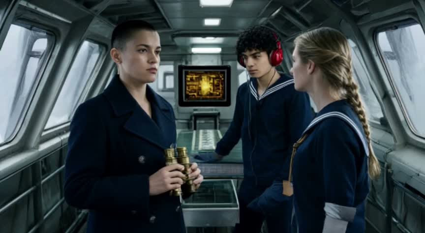
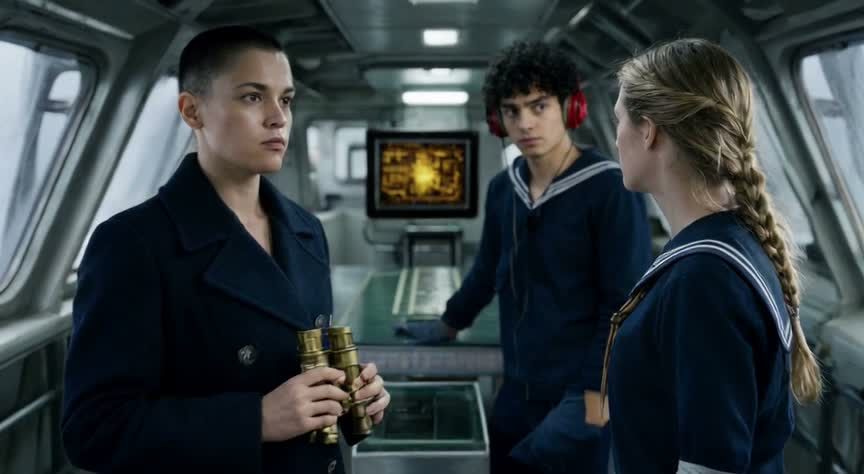
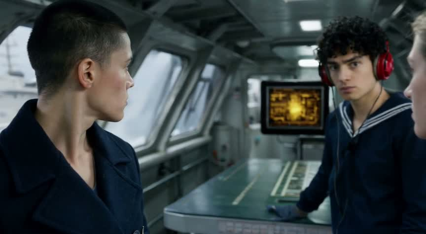
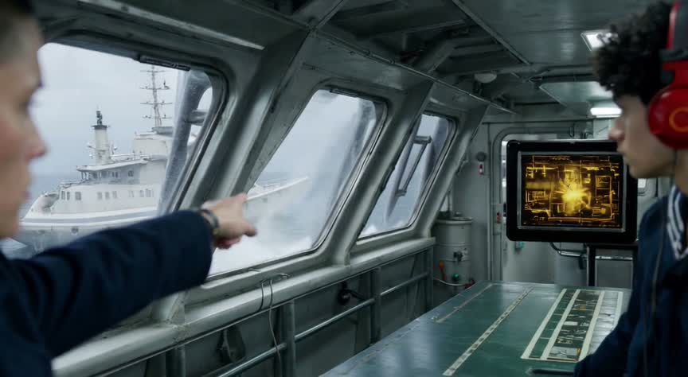
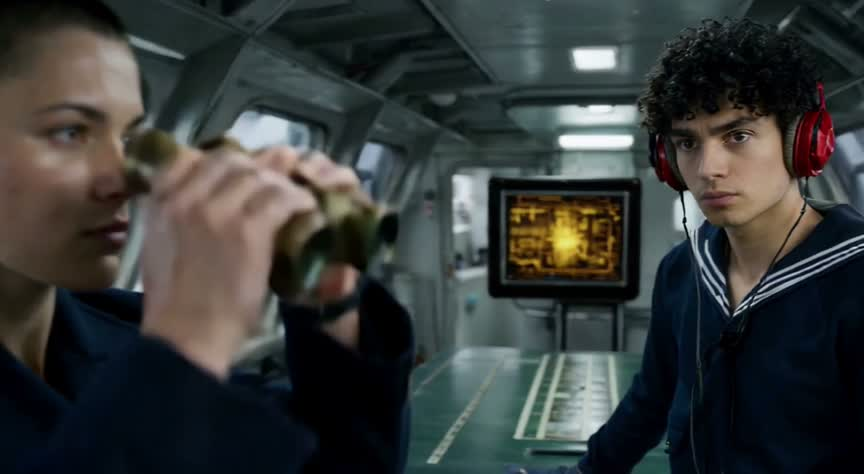
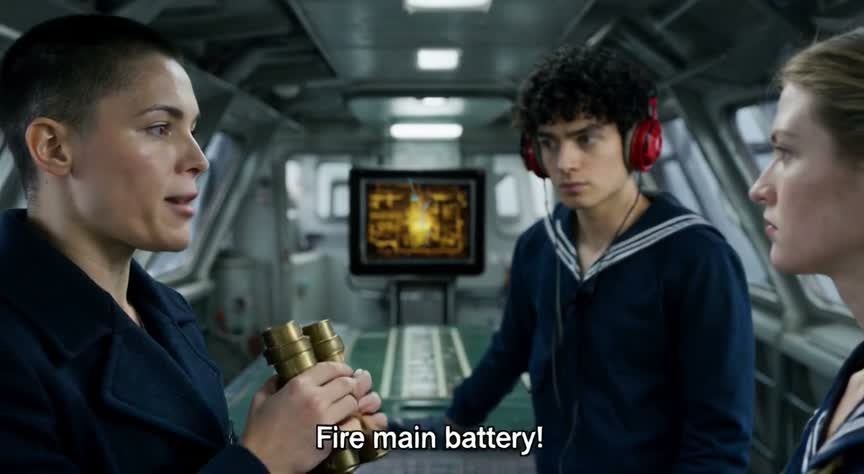
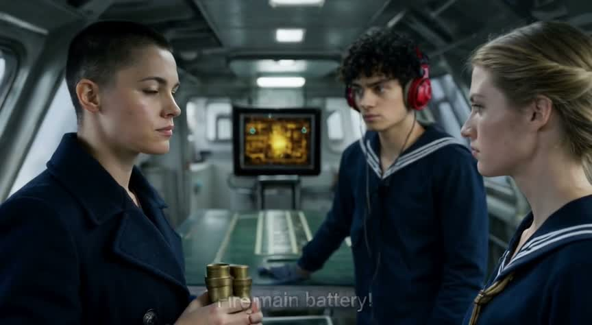
| beat | subject present | action seen | evidence |
|---|---|---|---|
| 1 | yes | unclear | The clip starts in a medium three-shot and moves closer by 1.5 s. The lookout looks alert, but his spotting a distant contact and sharpening his gaze are not clearly established. |
| 2 | yes | no | At 4.5 s, the lookout's visible hand remains on the chart table; he is not pointing through the windows. The later pointing gesture at 7.5 s comes from Vale on the left. |
| 3 | yes | no | At 7.5 s, Vale points toward a ship outside rather than looking through binoculars. The lookout watches that direction, and the helmsman is out of frame, so course attentiveness is not shown. |
| 4 | yes | unclear | At 10.5 s, the amber screen is visible and the lookout looks toward Vale. Contact tracking cannot be established from the sampled graphics. Vale's binocular confirmation appears here, later than requested. |
| 5 | yes | yes | At 13.5 s, all three faces are visible. Vale has lowered her binoculars, faces the helmsman, and appears to give the command; a firing-command subtitle is visible. The final two-second hold cannot be verified from stills. |
| exact words | none required |
| identity vs the reference | Captain Vale yes Vale retains the reference's facial appearance, very short dark hair, navy double-breasted coat, and brass binoculars. Lookout yes The lookout retains his youthful face, curly black hair, navy sailor shirt with striped collar, and red headset. Helmsman yes The helmsman retains her facial appearance, blond braided hair, navy sailor shirt, and visibly rolled sleeves in the opening frames. Bridge yes The narrow steel interior, slanted windows, central chart table, and cool rectangular overhead lamps match the reference. Tactical screen yes The same small, approximately square display with a thick black bezel and amber graphics remains behind the group. |
| same people and place | yes |
| last frame holds | unclear |
| artifacts | An unrequested firing-command subtitle appears near the bottom and remains faintly visible in the final frame.; The framing shifts laterally toward the windows, crops out the helmsman, and then returns to a wider three-shot rather than maintaining one continuous slow push. |
| failures | beat 2 must visibly show: The lookout points through the windows toward the enemy cruiser, keeping his eyes on it. (seen: At 4.5 s, the lookout's visible hand remains on the chart table; he is not pointing through the windows. The later pointing gesture at 7.5 s comes from Vale on the left.); beat 3 must visibly show: Vale confirms the contact through her binoculars along the lookout's pointing direction; the helmsman remains attentive to the course. (seen: At 7.5 s, Vale points toward a ship outside rather than looking through binoculars. The lookout watches that direction, and the helmsman is out of frame, so course attentiveness is not shown.) |
clip-2.mp4 · review FAIL · state record: a woman with cropped dark hair, a navy double-breasted coat, and brass binoculars; a young man with curly black hair, a navy sailor shirt, and a red headset; a woman with a blond braid, a navy sailor shirt, and rolled sleeves at bridge, aboard resolute, Late afternoon; words seen: none; last frame frames/clip-2-last.jpg[
{
"clip": "clip-2.mp4",
"seconds": 15,
"people": [
"a woman with cropped dark hair, a navy double-breasted coat, and brass binoculars",
"a young man with curly black hair, a navy sailor shirt, and a red headset",
"a woman with a blond braid, a navy sailor shirt, and rolled sleeves"
],
"place": "bridge, aboard resolute",
"time": "Late afternoon",
"mood": "Controlled tension turning into decisive action",
"words_seen": [],
"identity": [
{
"evidence": "Vale retains the reference facial features, very short dark hair, navy double-breasted coat, and brass binoculars throughout the samples.",
"carried": "Captain Vale",
"same_as_reference": "yes"
},
{
"evidence": "The lookout retains his youthful face, curly black hair, navy sailor shirt with striped collar, and red headset.",
"carried": "The lookout",
"same_as_reference": "yes"
},
{
"evidence": "The helmsman retains her facial features, blond braided hair, and navy sailor shirt. Rolled sleeves are visible in the wider opening frames and become cropped out as the camera moves closer.",
"carried": "The helmsman",
"same_as_reference": "yes"
},
{
"evidence": "The narrow steel interior, slanted windows, central chart table, and cool overhead lamps match the reference and remain spatially consistent.",
"carried": "The bridge",
"same_as_reference": "yes"
},
{
"evidence": "The same compact tactical display with a thick black bezel and amber graphics remains behind the group.",
"carried": "The tactical screen",
"same_as_reference": "yes"
}
],
"last_frame": "frames/clip-2-last.jpg"
}
]| # | kind | what | credits |
|---|---|---|---|
| 1 | LLM | v3-ref-seen-v1 · what the reference frame shows | 0 |
| 2 | LLM | v3-story-c3-v1 · the story with the reference's descriptors fixed | 0 |
| 3 | LLM | v3-prompt-i2v-v1 · the image-to-video prompt | 0 |
| 4 | LLM | v3-review-c3-v1 · review of clip-2 with the reference | 0 |
| 5 | LLM | v3-prompt-fix-v1 · failures folded in | 0 |
| 6 | LLM | v3-review-c3-v1 · review of clip-2-retry with the reference | 0 |
| 7 | image-to-video | /v1/image-to-video · ltx-2.5 15 s 480p audio on · 51 s | 360 |
| 8 | ffmpeg | frames of clip-2 | 0 |
| 9 | image-to-video | /v1/image-to-video · ltx-2.5 15 s 480p audio on · 51 s | 360 |
| 10 | ffmpeg | frames of clip-2-retry | 0 |
| total | 720 |
LLM usage: 5 calls, 16516 in / 3835 out tokens